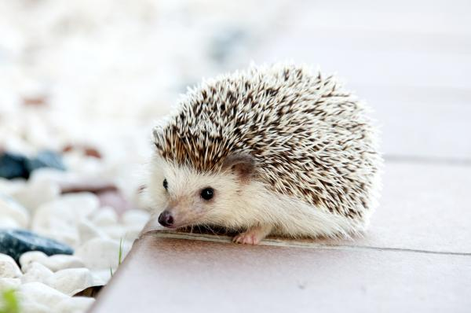
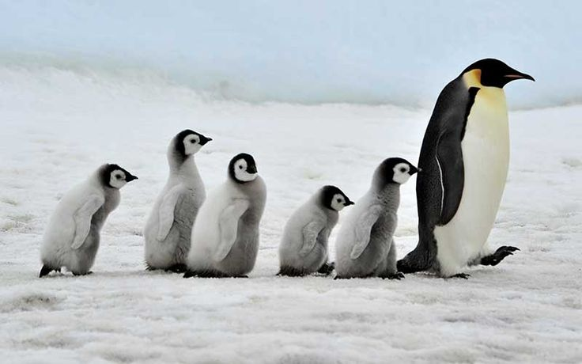
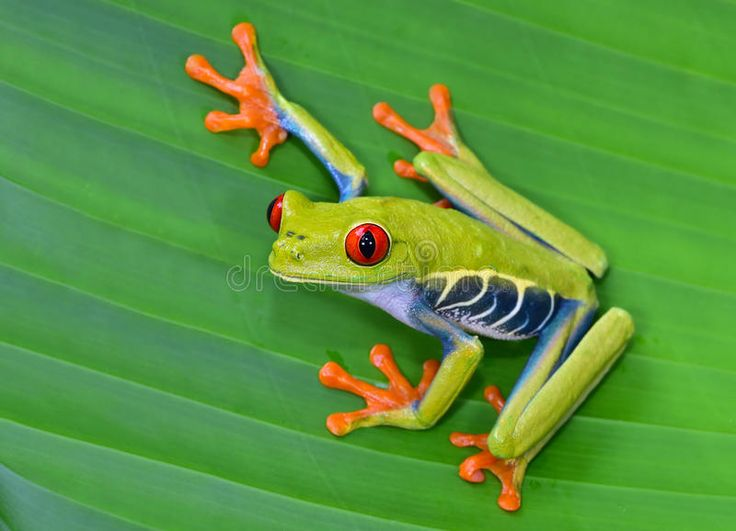
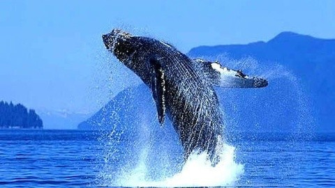
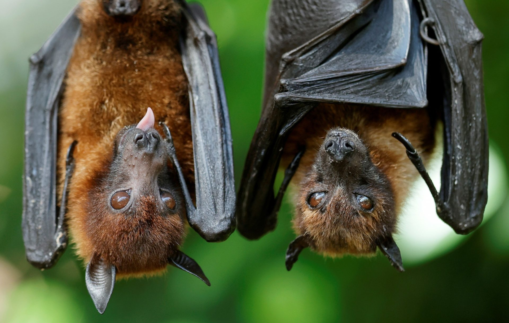
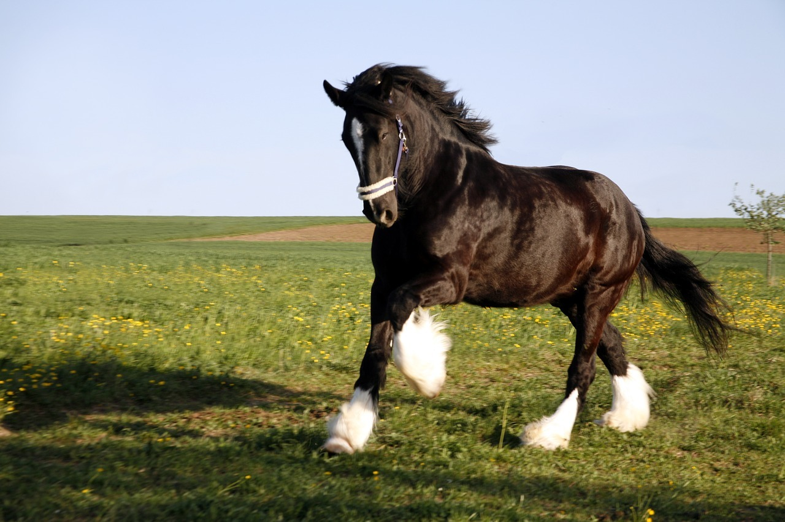
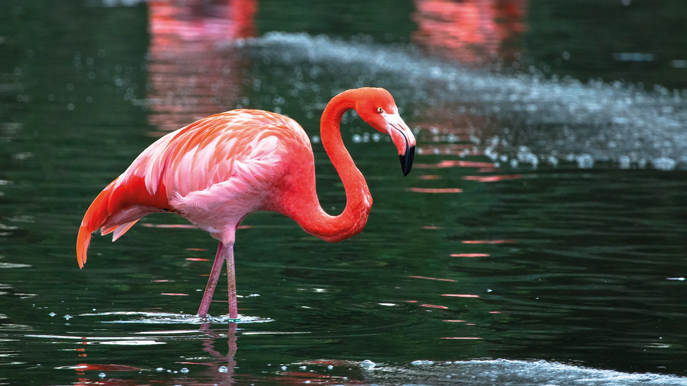

Pequeno mamifero cubierto de puas. Se enrolla como defensa.

Ave marina que no vuela. Gran nadador, adaptado al frio.

Anfibio de colores vivos que vive en ramas. Usa dedos pegajosos.

El animal mas grande del planeta. Se alimenta de kril.
 Reptil marino longevo. Recorre miles de km para anidar.
Reptil marino longevo. Recorre miles de km para anidar.

Unico mamifero que vuela. Usa ecolocalizacion.
 Mamifero chino que se alimenta de bambu.
Mamifero chino que se alimenta de bambu.

Animal domestico agil y fuerte, usado en el transporte.

Ave rosada que vive en lagos. Come crustaceos.